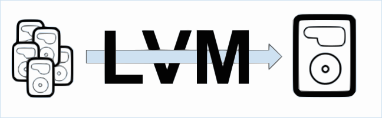
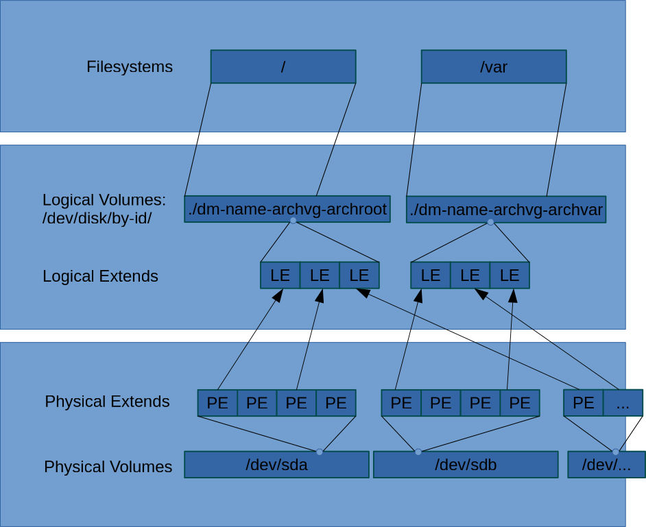

Restore deleted LVM (Advanced)¶
Note
Case of partition filesystem restore is much-much more trivial. It filesystem got corrupted - refer guides on that topic and use "TestDisc".
Intro
On the whole Internet until this post was no information on how to restore LVM, when no backup was present.
1. Do backups of the whole drive metadata.
2. On multiple drives - you would do Analyze and Restore for all drives involved.
So one way or another. Boot-sector and partition table are deleted from the drive. If only that first sectors was erased, it is great, we can work hard and restore the LVM.
If happened the classic in sence of:
1 2 3 | dd if=/dev/zero of=/dev/{h,p,s}d[a..x] bs=512 count=1 # Do not paste this to root prompt! # Like: # dd if=/dev/zero of=/dev/sda bs=512 count=1 # Do not paste this to root prompt! |
How to do boot-sectot backups¶
GPT case¶
1 | sgdisk -b=/path/to/backup/drive-sgdisk.bak /path/to/device
|
MBR case¶
1 2 3 | dd if=/dev/[hps]d[a-x] of=/backup/[hps]d[a-x] bs=512 count=1 # Like: # dd if='/dev/sda of=/backup/'`date --iso`'. sda' bs=512 count=1 |
LVM¶

LVM complicates the task of recovery, because it is basically a dynamically shifting layer between physical drives partitions and filesystems.
Delete the LVM info - filesystem with data basically locked in a chaos claster you can not penetrate.
There is small info on Internet on how to resurrect your true HDD/SDD LVM friend(s) alive - but check that info anyway also.
Here is the black magic.
- If you understand LVM in depth. LVM dynamically allocates physical space pieces (Physical extent (PE)).
Physical extent (PE)
The smallest size in the physical volume that can be assigned to a logical volume (default 4MiB))
This is one of main facts here. - Second fact - like most disc solutions - LVM does not shrink by itself. We can do that process, if we want. But LVM, by itself, only expands.
- Third fact - LVM does not move Physical extents (PE) around, they are statically placed. They allocated from free pool, given to Logical volume (LV), written in it info and that is it.
But now you see. LVM is a array of Physical extent (PE), and they was allocated and information stored on them is a complete chaos to us and to tools of recovery (they does not support LVM). That is why it seems impossible to resurrect for most people. But with dedication, way is described here.
More info on LVM¶
LVM maps Physical volumes (PV), to Volume groups (VG).
Physical volume (PV)
Partition on hard disk (or even the disk itself or loopback file) on which you can have volume groups. It has a special header and is divided into physical extents. Think of physical volumes as big building blocks used to build your hard drive.
Volume group (VG)
Group of physical volumes used as a storage volume (as one disk). They contain logical volumes. Think of volume groups as hard drives.
On Volume group (VG) you can describe a Logical volume (LV).
Logical volume (LV)
A "virtual/logical partition" that resides in a volume group and is composed of physical extents. Think of logical volumes as normal partitions.
And when Logical volume is going to need to expand its physical space, it does this by getting Physical extent (PE) and mapping it to Logical extent (LE) units, that then LVM includes to Logical volume (LV). It can expand until reaching quota, or free Volume group space available.
Logical extent (LE) units are additional abstraction for mapping LVM RAID PEs or PEs from different drives to single Logical volume.

Explaining the idea¶
Besides corner stones described in LVM, next piece also plays as important part.
Not so known fact, LVM does a backups of it's work information.
In /etc/lvm/backup it stores last backup. In /etc/lvm/archive lays a history of previous backup versions.
But it is a backup inside the filesystem we trying to restore.
Here comes a dirty magic I was talking about.
If only we could revive LVM to any metadata state (even non-consistent), than almost certainly we can expect to get the hold of that /etc/lvm/backup. And it going to shine a lite on us.
TestDisc can find LVM partition remains, but TestDisc doesn't support work with LVM. It only can say: it looks like some version of LVM table. So TestDisc can't somehow find for us, what version of LVM structure it restores (old or last one), and how consistent that LVM data is.
So idea is. To revive the largest LVM TestDisc can find (probably the latest one, because LVM only expands most of the time and LVM PE data is static), and then chroot to that somewhat alive filesystem from working system and restore /etc/lvm/backup.
Process of restoring¶
Tip
For LVM on multiple drives - you must do Analyze and Restore for all drives involved. After that next step - recovery - is going to be successful.
- Connect the drive to working system or boot from Live image that is compatible with distribution that you restore.
Example
As I used Arch Linux on that machine, I used Arch based Antergos Live image. DD-t ISO on a flash drive. Antergos image has X11, Desktop Environment and Gparted prettiness.
- Install (update)
lvm2andtestdisk. LVM2 as you guess provide LVM support. TestDisk is magical but not intuitive tool.
Backup full device¶
Backup at least what is on the drive:
1 | ddrescue -v -f -n /path/to/drive /backup/path /backup/path/rescue.log |
Because the process is somewhat nontrivial, long and uses a hack in it.
Note
ddrescue output can't be archived on the fly. If you need compression - use filesystem level compression on the backup media.
Choose right partition table¶
Choose here right type of the partition. It is up to your research. Probably you have one of: [EFI GPT], [Mac ], [Intel ].
1 2 3 4 5 6 7 8 9 10 11 12 13 14 15 16 | TestDisk 7.0, Data Recovery Utility, April 2015 Christophe GRENIER <grenier@cgsecurity.org> http://www.cgsecurity.org Disk /dev/sda - 1000 GB / 931 GiB - Hitachi HDS721010CLA330 Please select the partition table type, press Enter when done. [Intel ] Intel/PC partition >[EFI GPT] EFI GPT partition map (Mac i386, some x86_64...) [Humax ] Humax partition table [Mac ] Apple partition map [None ] Non partitioned media [Sun ] Sun Solaris partition [XBox ] XBox partition [Return ] Return to disk selection |
Hint: Intel partition table type has been detected. Note: Do NOT select 'None' for media with only a single partition. It's very rare for a disk to be 'Non-partitioned'.
Analyze of the system (long operation)¶
1 2 3 4 5 6 7 8 9 10 11 12 13 14 15 | TestDisk 7.0, Data Recovery Utility, April 2015 Christophe GRENIER <grenier@cgsecurity.org> http://www.cgsecurity.org Disk /dev/sda - 1000 GB / 931 GiB - Hitachi HDS721010CLA330 CHS 121601 255 63 - sector size=512 >[ Analyse ] Analyse current partition structure and search for lost partitions [ Advanced ] Filesystem Utils [ Geometry ] Change disk geometry [ Options ] Modify options [ MBR Code ] Write TestDisk MBR code to first sector [ Delete ] Delete all data in the partition table [ Quit ] Return to disk selection |
Note
Correct disk geometry is required for a successful recovery. 'Analyse' process may give some warnings if it thinks the logical geometry is mismatched.
1 2 3 4 5 6 7 | TestDisk 7.0, Data Recovery Utility, April 2015 Christophe GRENIER <grenier@cgsecurity.org> http://www.cgsecurity.org Disk /dev/sda - 1000 GB / 931 GiB - CHS 121601 255 63 Partition Start End Size in sectors >P Linux LVM 0 32 33 121601 90 25 1953523712 |
1 2 3 4 5 6 7 8 9 | TestDisk 7.0, Data Recovery Utility, April 2015 Christophe GRENIER <grenier@cgsecurity.org> http://www.cgsecurity.org Disk /dev/sda - 1000 GB / 931 GiB - CHS 121601 255 63 Partition Start End Size in sectors 1 P Linux LVM 0 32 33 121601 90 25 1953523712 |
1 2 3 4 5 6 7 8 9 10 11 12 13 14 15 16 17 18 19 20 21 22 23 | TestDisk 7.0, Data Recovery Utility, April 2015 Christophe GRENIER <grenier@cgsecurity.org> http://www.cgsecurity.org Disk /dev/sda - 1000 GB / 931 GiB - CHS 121601 255 63 Analyse cylinder 553/121600: 00% Linux LVM 0 32 33 121601 80 63 1953523120 Linux 0 65 2 13 0 51 204800 Linux 0 64 63 13 0 49 204800 Linux 0 64 63 13 0 49 204800 Linux 0 64 63 13 0 49 204800 Linux 0 64 63 13 0 49 204800 Linux 0 64 63 13 0 49 204800 Linux 13 0 52 3276 138 62 52428800 Stop |
Restoring LVM partition with TestDisc¶
After that scan TestDisc review several partitions to restore. One of which is LVM. And it says drive is to small (1T<1.3T or something like that) to reincarnate all that partitions. So you restore the LVM partition (the biggest).
Warning
At this stage partition and filesystem can be in inconsistent state. Minimize writing to system and proceed further. Restore from backup is going to get us consistent filesystem.
Rebooting system¶
To refresh drive boot-partition information - reboot after restoring.
Checking state¶
After reboot while doing:
1 2 3 4 5 6 7 8 9 10 11 | [antergos@ant-16.9 etc]$ lsblk NAME MAJ:MIN RM SIZE RO TYPE MOUNTPOINT sda 8:0 0 931.5G 0 disk sda1 8:1 0 931.5G 0 part archvg-boot 254:0 0 100M 0 lvm archvg-archroot 254:1 0 25G 0 lvm /mnt/etc archvg-archvar 254:2 0 15G 0 lvm /run/media/antergos/244907d8-7c9f- archvg-swap 254:3 0 8G 0 lvm archvg-vault 254:4 0 800G 0 lvm archvg-crypt 254:5 0 1G 0 lvm archvg-archhome 254:6 0 20G 0 lvm /run/media/antergos/e2d59443-1e66- |
You began to see:
1 2 3 | [antergos@ant-16.9 etc]$ sudo vgscan Reading volume groups from cache. Found volume group "archvg" using metadata type lvm2 |
Restoring from backup¶
1 2 3 4 5 6 7 8 9 10 11 12 13 14 15 16 17 18 19 20 | sudo -s # Change volume group attribute to activated vgchange -ay archvg mkdir /mnt/root/ # We need to mount only partition that has backup mount /dev/disk/by-id/archvg-root /mnt/root/ # Locate/print block device attributes blkid /dev/sda1 # /dev/sda1: UUID="7SFaGJ-LKnf-mlx7-m8dY-1bg4-epWM-09y8vR" TYPE="LVM2_member" # Investigate backup. Compare with information above cat /mnt/root/etc/lvm/backup/archvg # Restore volume group configuration vgcfgrestore -f /mnt/root/etc/lvm/backup/archvg archvg #Metadata Restored |
Next reboot¶
Reboot.
After that, if you try to boot to recovered system, - you can get error:
1234F:
Because no bootloader was configured. Now we need boot from Live image once more.
(optional) Make partition bootable¶
If you was booting from LVM.
Mark partition bootable (that flag was in old boot-sector, as you know old-one went away).
sudo gparted.
Right click on partition. Flags. "boot".
Mounting everything on working system (preparing for chroot)¶
Now you need by yourself mount all LVM volumes to single tree in /mnt/root, exactly how it was on that system. Because your LVM config is unique, as also mine, I can't give you literal instructions.
Example
I going to mount:
1 2 3 4 5 6 | archvg-archroot /mnt/root/ archvg-boot /mnt/root/boot archvg-archvar /mnt/root/var archvg-archhome /mnt/root/home archvg-vault /mnt/root/mnt/vault archvg-crypt /mnt/root/mnt/crypt |
So I did:
1 2 3 4 5 6 7 8 9 10 11 12 13 14 15 16 | sudo -s
mkdir -p /mnt/root/
mount /dev/disk/by-id/dm-name-archvg-archroot /mnt/root/
mkdir -p /mnt/root/boot
mount /dev/disk/by-id/dm-name-archvg-boot /mnt/root/boot
mkdir -p /mnt/root/var
mount /dev/disk/by-id/dm-name-archvg-archvar /mnt/root/var
mkdir -p /mnt/root/home
mount /dev/disk/by-id/dm-name-archvg-archhome /mnt/root/home
mkdir -p /mnt/root/mnt/vault
mount /dev/disk/by-id/dm-name-archvg-vault /mnt/root/mnt/vault
mkdir -p /mnt/root/mnt/crypt
mount /dev/disk/by-id/dm-name-archvg-crypt /mnt/root/mnt/crypt
swapon /dev/disk/by-id/dm-name-archvg-swap
swapon
lsblk # check everything
|
Tip
Control what you are mounting where with lsblk. You need do everything right before going chroot.
Chrooting¶
Chroot to the system:
1 | arch-chroot /mnt/root /bin/fish |
System maps filesystem data to current system.
Setup the bootloader¶
On this system bootloader was this:
1 2 3 4 5 6 7 8 9 10 11 | pacman -Sy grub
lsblk
grub-install --target=i386-pc /dev/sda
ls /boot/grub/grub.cfg*
diff /boot/grub/grub.cfg /boot/grub/grub.cfg.pacnew
grub-mkconfig -o /boot/grub/grub.cfg
|
Congratulations!¶
Success
After this you have fully restored system. So now you can reboot to your long awaited system and everything is going to run smooth.